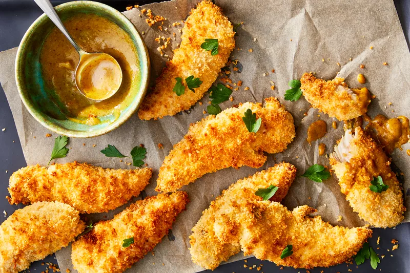
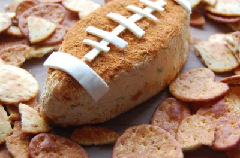

MAIN DISHES
7 Air Dryer Dinners for Every Night of the Week
Your beloved countertop appliance is going to be as busy as you are: use it for crispy chicken, shrimp, and so much more.
Food News
My Dad Has Won 3 Chili Cook-Offs—Here Are His Secrets

Our Fall Issue of Allrecipes Magazine Is Here

Dunkin’s Fall Menu Is the Best We’ve Seen in Years
I Finally Found the Best Vacuum Sealer for My Tiny Kitchen
Trending now
Trends
The 18 Recipes We Can’t Wait To Make This September

Tailgating
The Most Popular Tailgating Foods Across 34 States

Fruit desserts
14 Perfect Fruit Desserts for Late Summer

Hatch chili
We're Hooked on Hatch Chiles
Home of the Home Cook
We know our community (that’s you!) is the key ingredient that
sets us apart.
Learn More

Waffles
"My first waffles from scratch and my picky husband thought these were amazing! Light and fluffy with a great flavor. I also made the homemade vanilla maple syrup."
footballgrl16, Oklahoma, Joined 2009
Our People
Testing, tasting, editing, and tasting again—our food pros are dedicated to showcasing the best of what you, our home cook heroes, are doing in your kitchens.
Editorial Leadership
4
4
4
4
4
4
Contributors
4
4
4
Test Kitchen
4
4
4
7